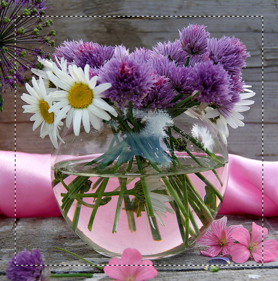
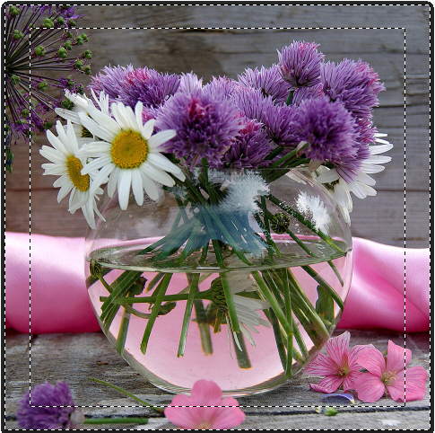
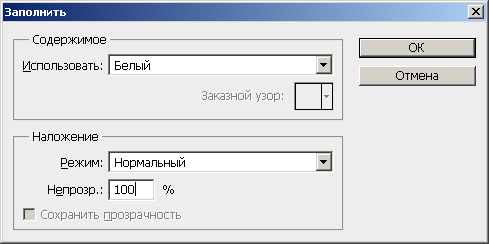
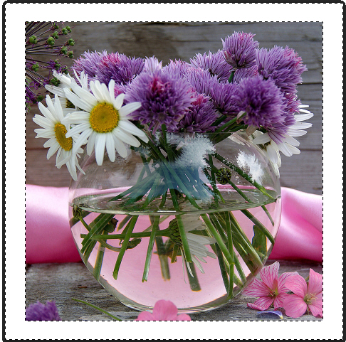
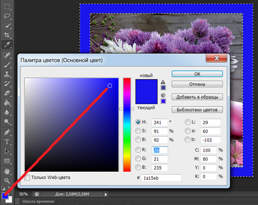
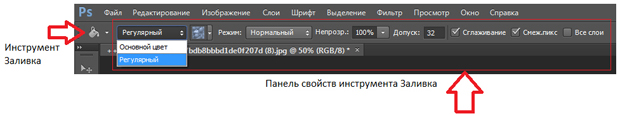
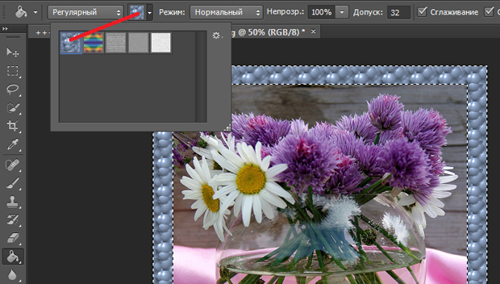
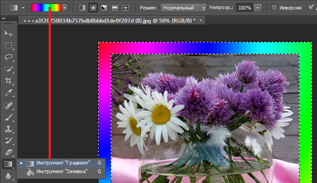
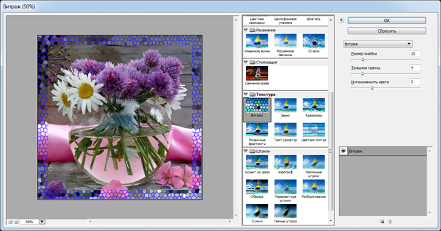
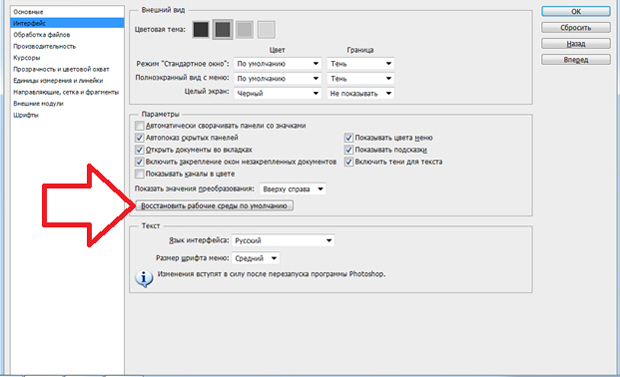

Лекция 3: Создание фоторамки
На этом занятии мы будем создавать различные рамочки для фотографий. Откройте любое фотоизображение в программе Adobe Photoshop и инструментом Прямоугольная область произведите выделение части изображения в виде рамки ( рис. 3.1).
Рис. 3.1. Выделение части изображения прямоугольной рамкой
Далее выполните команду Выделение-Инверсия для того, чтобы сформировать "тело" для будущей фоторамки ( рис. 3.2).
Рис. 3.2. Область изображения под рамку задана
Теперь нажмите на клавиатуре клавишу Delete для удаления выделенной части изображения - появится окно с предложением заполнить удаленную часть фотографии цветом, мы выберем белый цвет ( рис. 3.3 и 3.4).
Рис. 3.3. Окно Заполнить
Рис. 3.4. Тело рамки сформировано
Теперь активируйте инструмент Заливка и залейте область рамки каким-либо цветом ( рис. 3.5).
Рис. 3.5. Рамка с однородной заливкой готова
Но, на этом мы не закончим и работу продолжим. Дело в том, что когда вы выбираете какой-либо инструмент, то на Панели свойств данного инструмента сразу появляются возможности настройки этого (активного в данный момент) инструмента ( рис. 3.6).
Рис. 3.6. Панель свойств инструмента Заливка
Перейдите на панели свойств из основного цвета в регулярный. Теперь вы можете заливать рамку не только основным однородным цветом, но и несколькими вариантами узоров ( рис. 3.7).
Рис. 3.7. Пример заливки рамки узором
Третий вариант рамки - заливка градиентом. Как это выполнить показано на рис. 3.8.
Рис. 3.8. Градиентная заливка рамки
И, наконец, рамку можно сделать четвертым способом заливки с помощью фотофильтров. Вернитесь к ситуации, показанной ранее на рис. 3.2. Это можно сделать, несколько раз нажав на комбинацию клавиш Alt+Ctrl+Z. Теперь выполните команду Фильтр-Галерея фильтров-Текстура-Витраж. В результате выделенная часть изображения будет деформирована фильтром и образует художественную рамочку для нашей фотографии ( рис. 3.9). Попробуйте также и другие фильтры.
Рис. 3.9. Применение к выделению фильтра Витраж
Для завершения примера нажмите на кнопку ОК и снимите выделение с помощью команды Выделение-Отменить выделение.
Подобным приемом можно создавать фоторамки различной толщины и узора, а если выбрать не прямоугольное выделение, а овальное, то рамки будут круглые или овальные.
Совет
Довольно часто новички, в процессе неумелой работы, "разрушат" весь интерфейс так, что сложно потом найти какой либо инструмент или палитру, также, могут быть сдвинуты стандартные настройки инструментов. В этом случае полезно восстановить оптимальные, по мнению разработчиков программы умолчания. Делается это командой Редактирование-Установки-Интерфейс и далее нажать на кнопку Восстановить рабочие среды по умолчанию ( рис. 3.10).
Рис. 3.10. Окно Установки